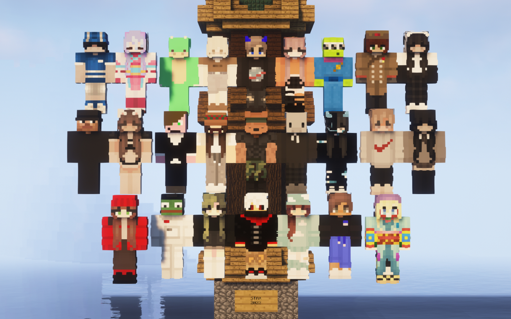
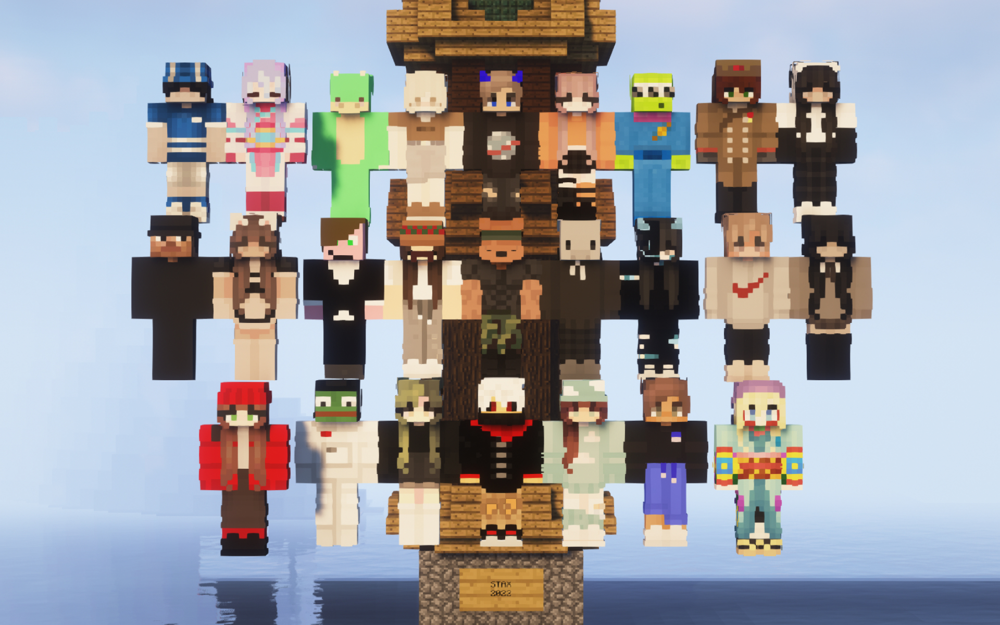

La Stax représente une équipe, des amis, une famille. Souvernirs, Anecdotes et fous rires, y sont partagés. Pour le meilleur ou pour le pire, c’est un joli rassemblement de chtarbés.
Tout a commencé sur Minecraft, un simple jeu de cube. Sur un serveur, dénommé Lifecraft... et
depuis ce
simple jeu de cube, une team est née.
A l’origine, la majorité de ses membres étaient issus de la SkoZ, team qui avait pour but
d’éradiquer
toutes les petites merd** (#Andrea_du_69). A cette connaissance, un héros fit son apparation, le
grand
DesNox, plus connu aujourd’hui sous le nom de Ju.


 

Ce dernier décida de fonder un autre groupe avec tous les membres exclus et ainsi, le 29 avril 2017, naquit la Stax ! (Youhouuuuu) UWU Jour après jour, année après année, la Stax a su se développer, des membres prirent parti à cette aventure et d’autres sont partis tels des gros fils de put** mais c’est pas grave mdr, dommage pour eux. Aujourd’hui, ce groupe d’amis est devenu une grande et belle famille, et compte 25 membres à son actif... et bientôt 26. (#Quelqu’un)